Making Hero Figures
The hero figure is Figure 1: the picture a reviewer sees before reading the introduction. In about ten seconds it should answer three questions.
- Problem What is hard or missing today?
- Idea What is the one thing that changes that?
- Payoff What becomes possible, and by how much?
It is a visual abstract, not the architecture diagram. This page shows 24 first figures from ICML, NeurIPS, ICLR, CVPR, ICCV, ECCV, KDD, AAAI and SIGGRAPH, and what to borrow from each. It is part of Writing Papers.
Choose what leads
Ask which sentence of the abstract a reviewer should repeat to the other reviewers. Draw that sentence.
| Your main claim | Lead with | Layout | See |
|---|---|---|---|
| “Everyone has missed problem X.” | problem | A plot of the failure | Informer, ResNet |
| “A small change to a known method matters.” | idea | Old and new, side by side | Chain-of-Thought, Swin Transformer |
| “One simple idea solves X.” | idea | One example in, the idea, the result out | CLIP, MAE, LIME, LLMTime |
| “One method handles many settings.” | idea | Many inputs, one model, many outputs | AnySat, pix2pix |
| “We do X better, faster or cheaper.” | payoff | Methods side by side, numbers on the picture | 3D Gaussian Splatting, EfficientNet |
| “We can now do X, which nobody could.” | payoff | A gallery of real outputs | CycleGAN, ImageBind, GeoChat |
| “Here is a dataset or a benchmark.” | scope | Real samples and counts, or one item from input to score | SatlasPretrain, SWE-bench, CheXpert |
| “We make several contributions.” | scope | One panel per contribution | Segment Anything |
Our default for an applied paper: three panels, problem then idea then payoff, on one real example, with one number. Give the most space to your strongest panel.
Lead with the problem
Use this when the gap itself is your news.
Informer · AAAI 2021 · paper
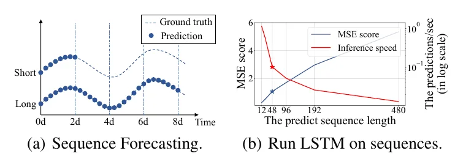
problem
It measures an existing model breaking as the forecast gets longer. The new method is not even shown.
Borrow: If a reader may doubt the gap, plot the baseline failing.
ResNet · CVPR 2016 · paper
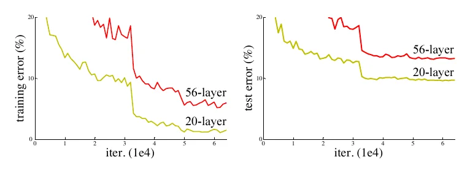
problem
Two lines per plot, named on the lines. The deeper network is worse, which nobody expects.
Borrow: A surprising measurement is a complete Figure 1.
Chain-of-Thought · NeurIPS 2022 · paper
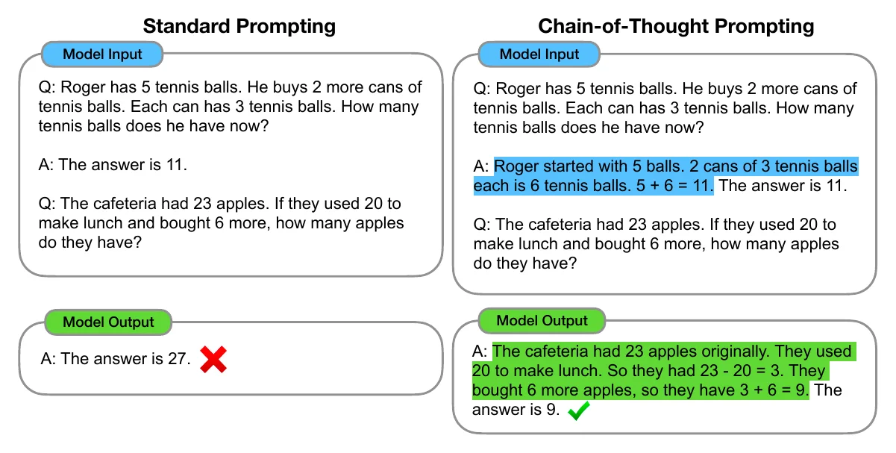
problem → idea → payoff
The two columns are identical except for the highlighted text, so the eye lands on the idea. ✗ becomes ✓.
Borrow: Hold everything fixed except your idea, and colour only that.
Lead with the idea
Use this when one idea carries the paper.
CLIP · ICML 2021 · paper
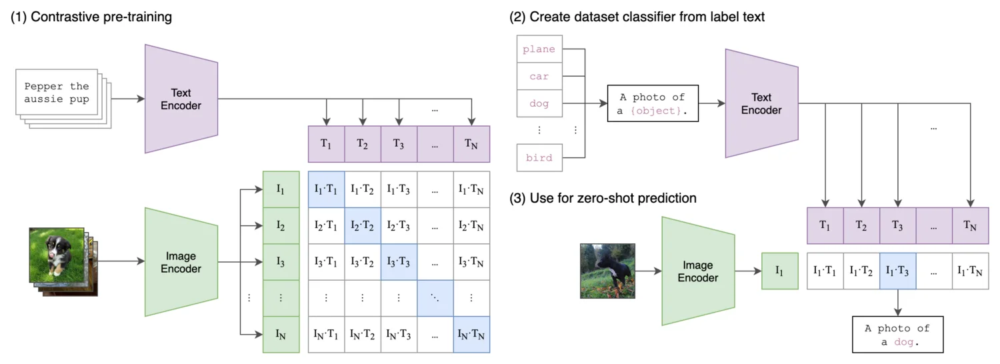
idea → payoff
Three numbered panels show how the model is trained, and then how it is used.
Borrow: Number the panels, and end on the use.
MAE · CVPR 2022 · paper
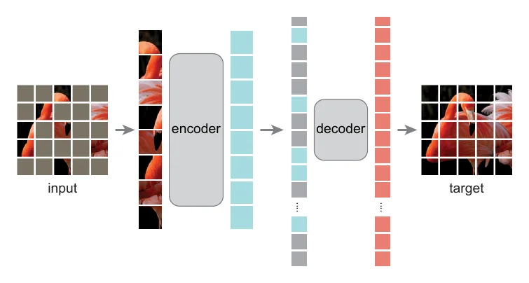
idea → payoff
An architecture with five elements and one real image. The big encoder takes few patches; the small decoder takes all.
Borrow: Draw only what is new, and let size mean something.
LIME · KDD 2016 · paper
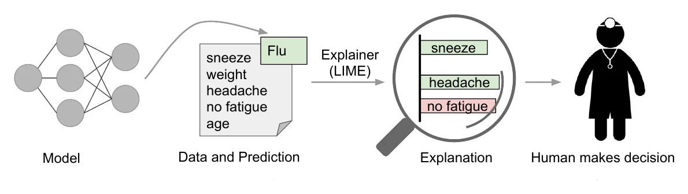
problem → idea → payoff
One patient tells the whole method, and the figure ends at the doctor who decides.
Borrow: End at the person who uses the output. Watch out: Generic icons. Use a real case today.
Generative Image Dynamics · CVPR 2024 · paper
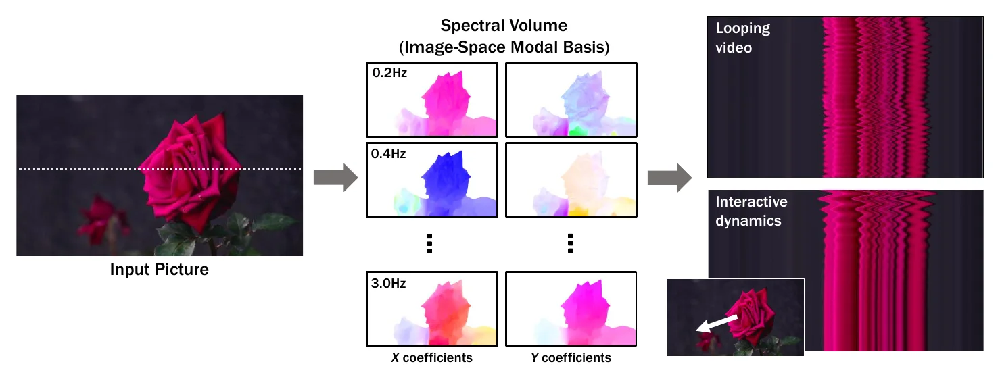
idea → payoff
The middle panel shows what the new representation looks like, where most papers put a labelled box.
Borrow: Replace boxes with pictures of what is inside them.
AnySat · CVPR 2025 · paper
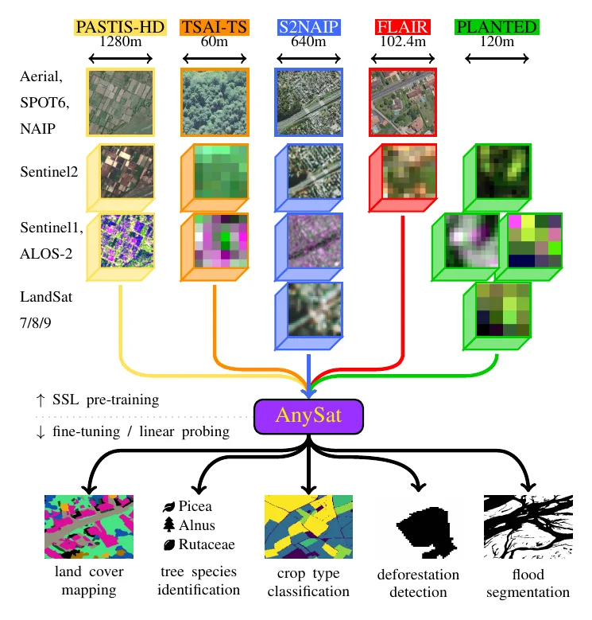
problem → idea → payoff
Many real inputs, one model, many real outputs. The shape is the claim.
Borrow: For generality, draw the funnel and fill both ends with real samples.
Swin Transformer · ICCV 2021 · paper
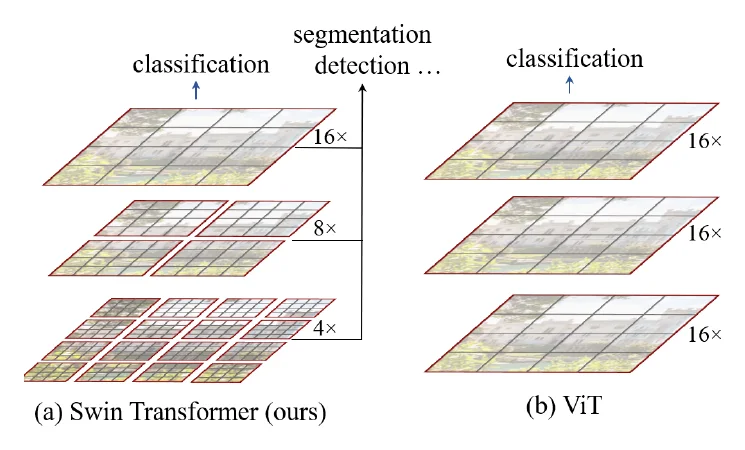
idea → problem
Ours and the nearest baseline are drawn with the same shapes, so the only difference is the contribution.
Borrow: Draw the baseline the same way as your method.
YOLO · CVPR 2016 · paper
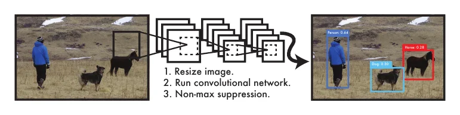
idea → payoff
The claim is simplicity, and the figure is one photo, one network and three steps.
Borrow: If simplicity is the point, stop at three parts. Watch out: Tiny in print.
LLMTime · NeurIPS 2023 · paper
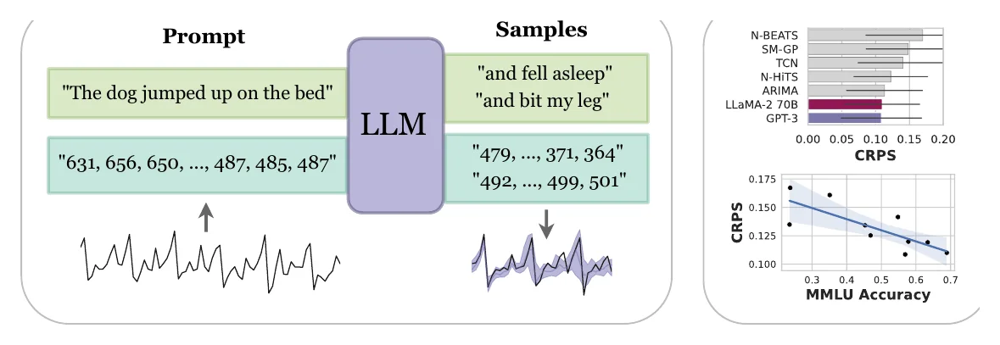
idea → payoff
Text above, numbers below, the same model between. The analogy is the idea, and two small plots pay it off.
Borrow: For “treat X as Y”, draw X and Y in parallel.
Lead with the payoff
Use this when the result speaks for itself: a new ability, or a clear win.
3D Gaussian Splatting · SIGGRAPH 2023 · paper
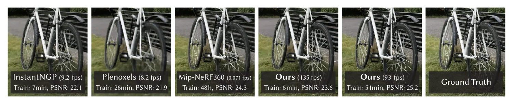
problem → payoff
One scene for every method, with speed, training time and quality printed on each image.
Borrow: Put the numbers on the picture, and include the ground truth.
EfficientNet · ICML 2019 · paper
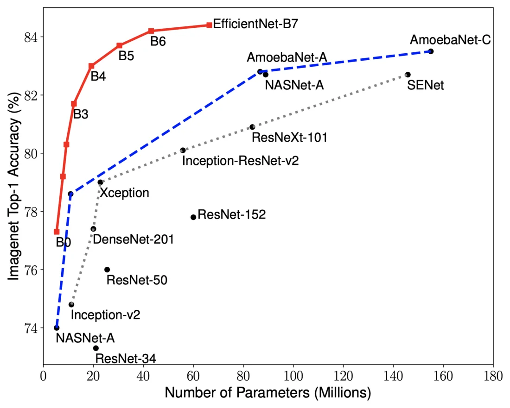
payoff
The claim is a trade-off, so the figure is the trade-off: one red line above every named rival.
Borrow: Plot accuracy against cost, and label the points directly.
CycleGAN · ICCV 2017 · paper
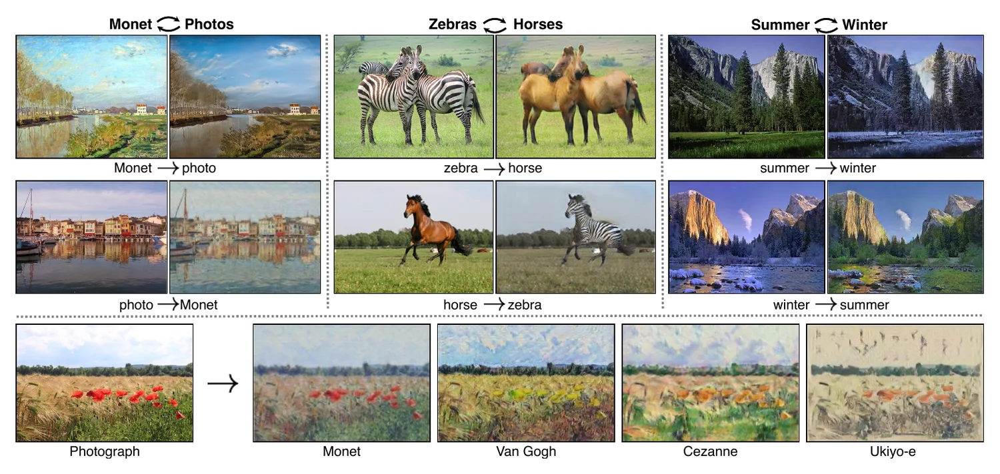
payoff
Examples anyone can judge in a second, and a two-way arrow for the method’s key property.
Borrow: Choose examples a stranger can judge.
pix2pix · CVPR 2017 · paper
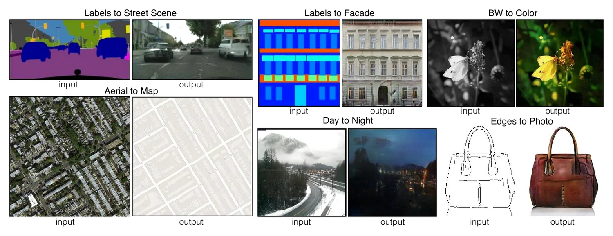
payoff
Six problems solved the same way, each as an input and an output under a two-word title.
Borrow: For breadth, repeat one small unit.
DINO · ICCV 2021 · paper
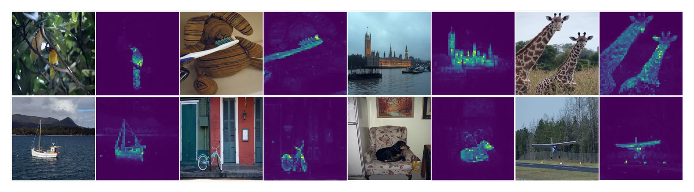
payoff
The finding is a surprise, so the figure shows only the surprise: objects light up without any labels.
Borrow: Show the unexpected behaviour on many inputs.
ImageBind · CVPR 2023 · paper
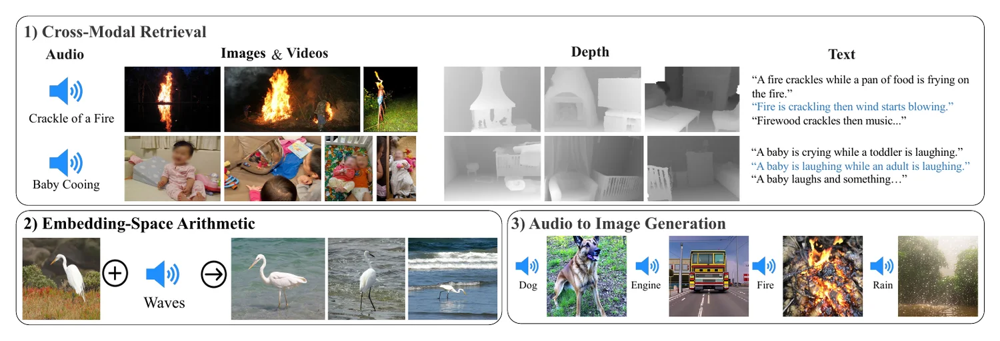
payoff
Three new abilities in three numbered boxes, shown before the model is explained.
Borrow: Give each new ability a box and a three-word title.
GeoChat · CVPR 2024 · paper
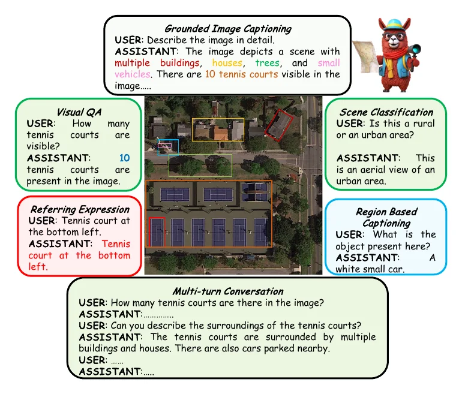
payoff
One aerial image with six tasks around it. Colours tie each answer to its region.
Borrow: Hold the input fixed, and vary the question. Watch out: Dense at column width.
Lead with the scope
Use this for datasets, benchmarks and papers with several contributions.
Segment Anything · ICCV 2023 · paper
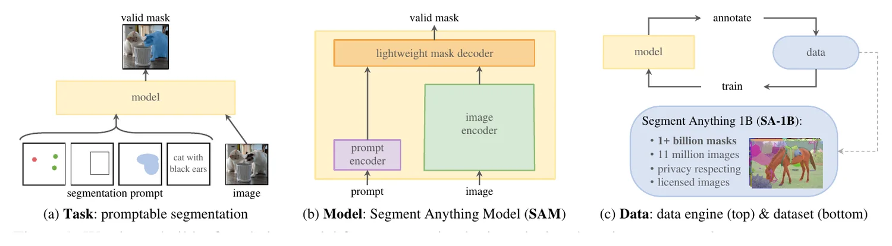
scope
Three contributions, three panels, and the same three names as the introduction.
Borrow: Give each contribution a panel, with matching words.
SatlasPretrain · ICCV 2023 · paper
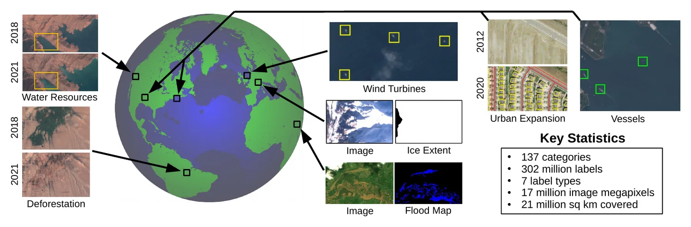
scope → payoff
A globe for coverage, real tiles named by their use, and the counts in one box.
Borrow: For a dataset: real samples, real uses, three or four counts.
SWE-bench · ICLR 2024 · paper
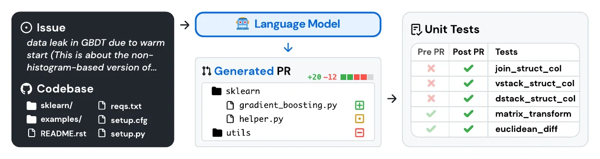
scope → payoff
It follows one real issue from input to score, so the task and the metric are learnt together.
Borrow: For a benchmark, show one item end to end.
SustainBench · NeurIPS 2021 · paper
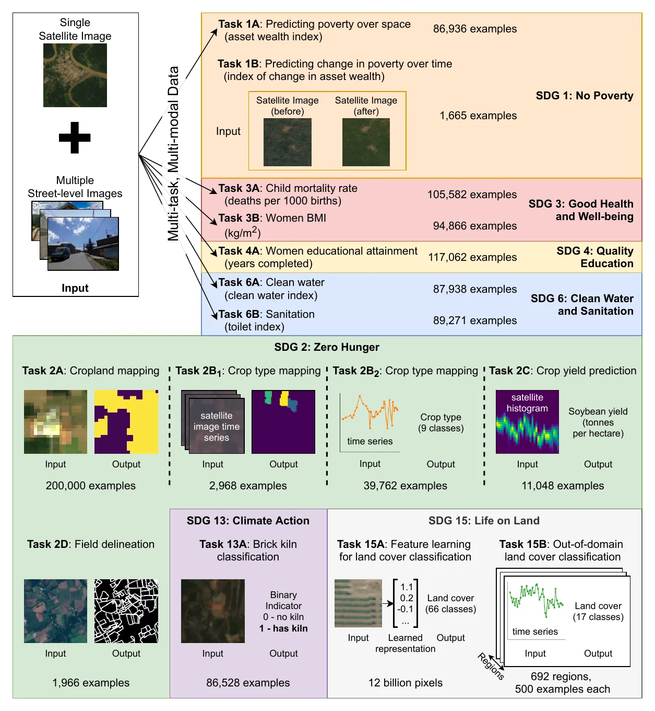
scope
Fifteen tasks, grouped and coloured by the goal each serves, each with its input, output and size.
Borrow: Group many items by something the reader cares about. Watch out: Near the limit for one figure.
CheXpert · AAAI 2019 · paper
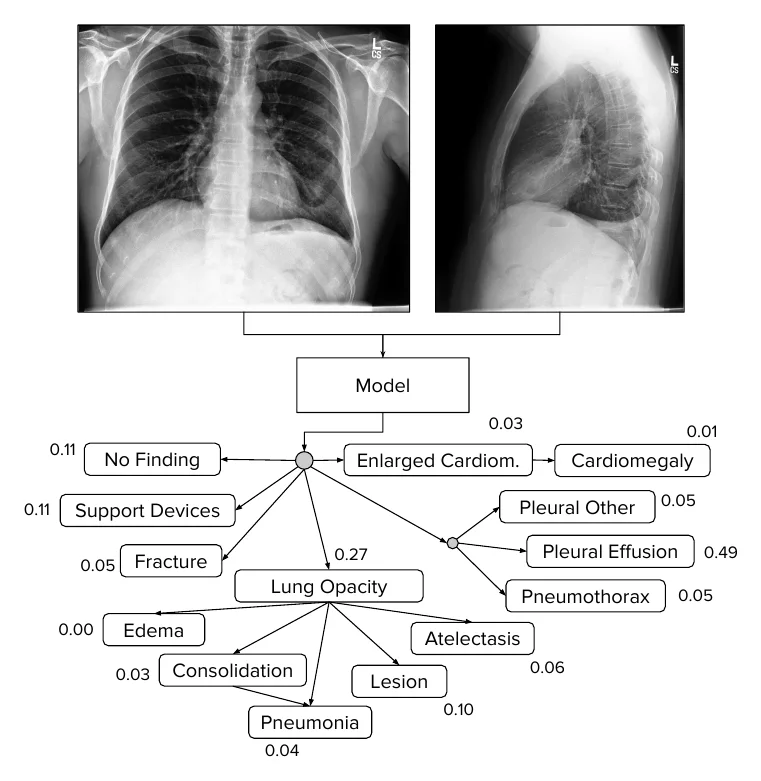
scope → payoff
One real case defines the task: these X-rays in, these fourteen probabilities out.
Borrow: Show one real input and its full output.
BLINK · ECCV 2024 · paper
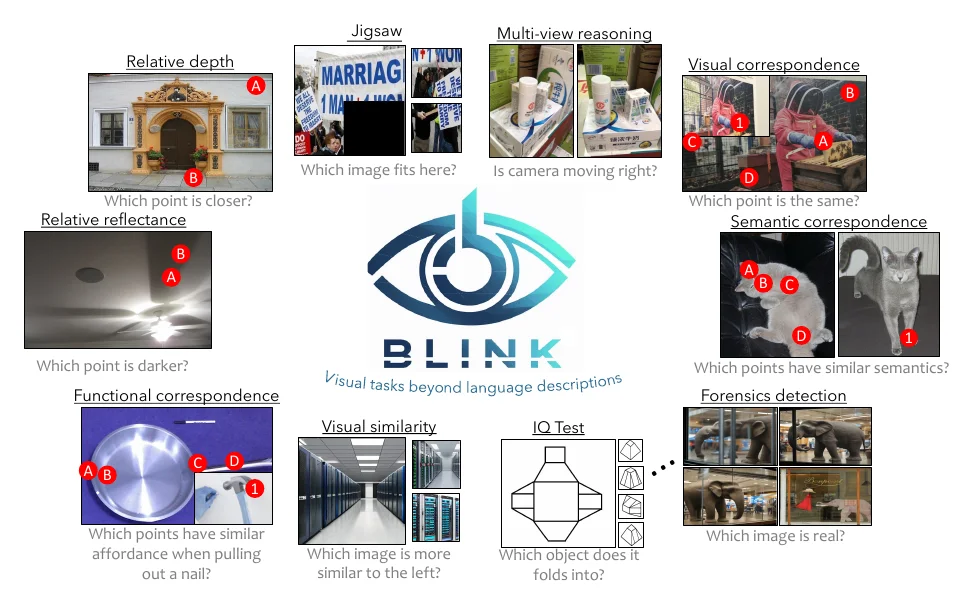
scope
Each task is an image and a question that the reader can try, which shows they are easy for people.
Borrow: Let the reader attempt a sample. Watch out: Very small in print.
What the 24 have in common
- Page 1. 20 of 24 put Figure 1 on the first page. The other 4 put it on the second.
- Real data. 20 of 24 are built from real images, series or text, not icons.
- Few parts. Most have two to four groups. A gallery repeats one small unit.
- Rarely an architecture. Only MAE calls itself one, and it has five elements.
- Few numbers. Only 5 carry a measured result. The rest show outputs that anyone can judge by eye. A forecast or a temperature cannot be judged by eye, so our figures need the number.
| Paper | Leads with | Layout | Page | Real data | Number | Strongest on |
|---|---|---|---|---|---|---|
| Informer | problem | plot | 1 | yes | result | problem framing, evidence |
| ResNet | problem | plot | 1 | yes | result | clarity, problem framing, readable in print |
| Chain-of-Thought | problem | contrast pair | 1 | yes | none | clarity, novelty, real examples |
| CLIP | idea | strip | 2 | partly | none | novelty, hierarchy, stands alone |
| MAE | idea | strip | 1 | yes | none | novelty, readable in print, clarity |
| LIME | idea | strip | 2 | no | none | clarity, hierarchy |
| Generative Image Dynamics | idea | strip | 1 | yes | none | hierarchy, novelty |
| AnySat | idea | funnel | 1 | yes | none | real examples, clarity |
| Swin Transformer | idea | contrast pair | 1 | no | none | novelty, problem framing, readable in print |
| YOLO | idea | strip | 1 | yes | none | clarity, novelty |
| LLMTime | idea | strip | 2 | yes | result | novelty, evidence, real examples |
| 3D Gaussian Splatting | payoff | comparison row | 1 | yes | result | evidence, stands alone, problem framing |
| EfficientNet | payoff | plot | 1 | yes | result | evidence, clarity, readable in print |
| CycleGAN | payoff | gallery | 1 | yes | none | real examples, clarity |
| pix2pix | payoff | gallery | 1 | yes | none | real examples, hierarchy, stands alone |
| DINO | payoff | gallery | 1 | yes | none | stands alone, real examples |
| ImageBind | payoff | gallery | 1 | yes | none | real examples, hierarchy |
| GeoChat | payoff | hub | 1 | yes | none | real examples, stands alone |
| Segment Anything | scope | triptych | 1 | partly | counts | hierarchy, stands alone |
| SatlasPretrain | scope | hub | 1 | yes | counts | real examples, evidence |
| SWE-bench | scope | strip | 1 | yes | none | real examples, clarity |
| SustainBench | scope | gallery | 2 | yes | counts | hierarchy, real examples |
| CheXpert | scope | strip | 1 | yes | none | clarity, real examples |
| BLINK | scope | hub | 1 | yes | none | real examples, hierarchy |
Number: the figure carries a measured result, only counts of data, or no number.
Make your own
- Write the sentence. “Today, [problem]. We [idea]. Now, [payoff with a number].”
- Choose what leads, from the table above.
- Follow one real example through every panel. Pick a typical case, not the best of fifty.
- Sketch on paper first, in week one, with three or four groups and one reading direction.
- Replace boxes with pictures. A box that says “Encoder” shows nothing.
- Put one number on it, with the baseline beside it.
- Colour only what is new. Everything else is grey.
- Build it at final width, as a vector PDF, with text of at least 6 to 7 pt. Put it on page 1.
- Open the caption with the claim, and use the abstract’s words on the figure.
- Test it for ten seconds on someone outside the project. Redraw what they miss.
Writing Papers works through these steps for five papers.
Checklist
The figures are reproduced from the cited papers for teaching and criticism only. Each belongs to its authors and publisher. If you are an author and would like a figure removed, please write to us.